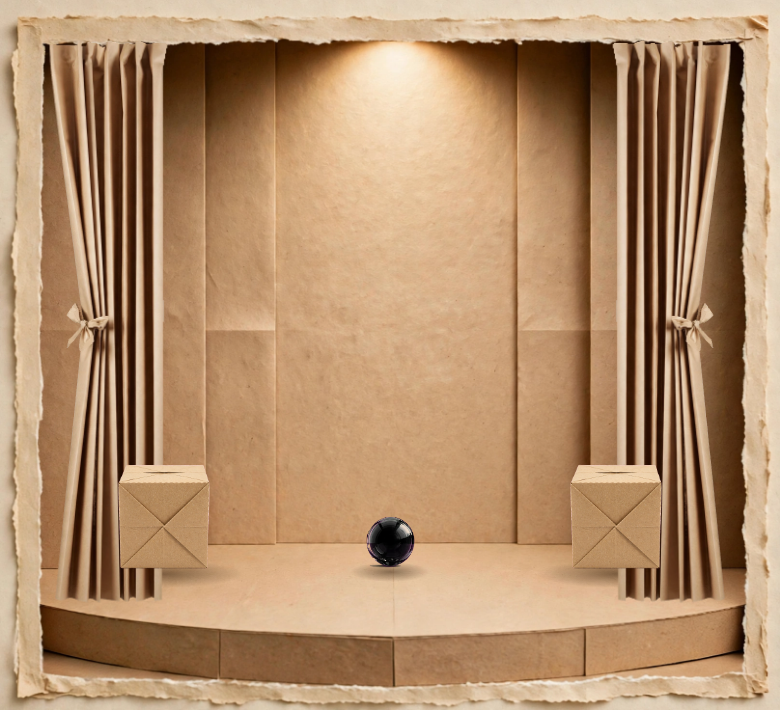
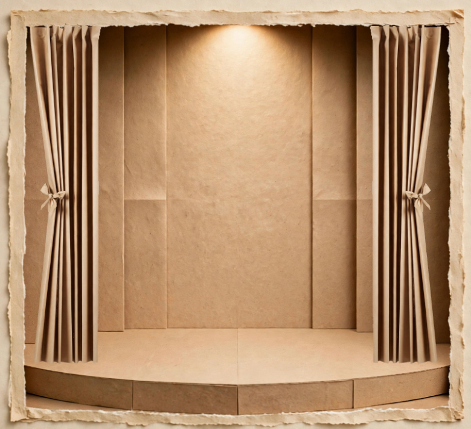
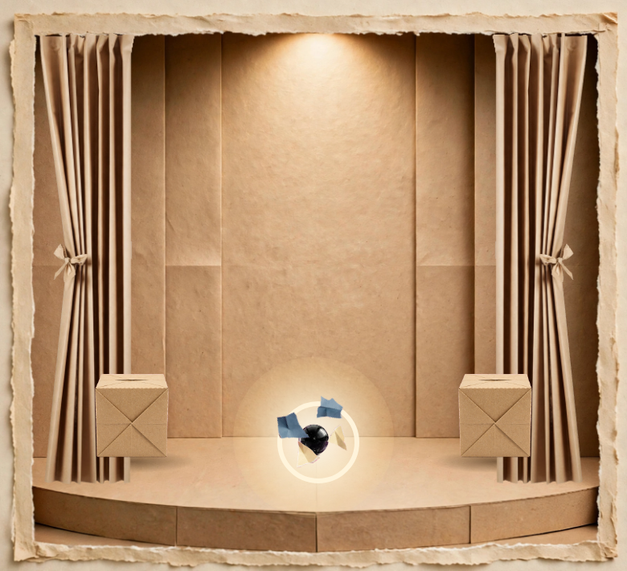
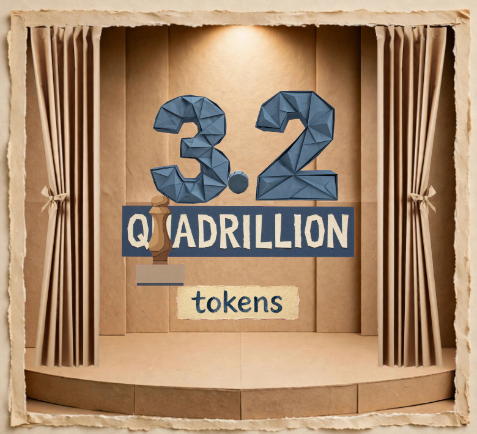
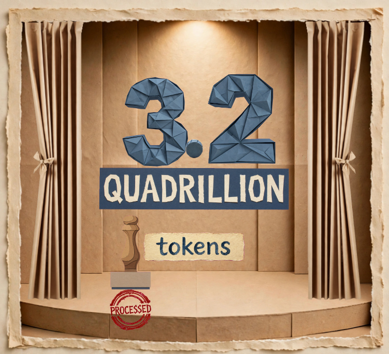
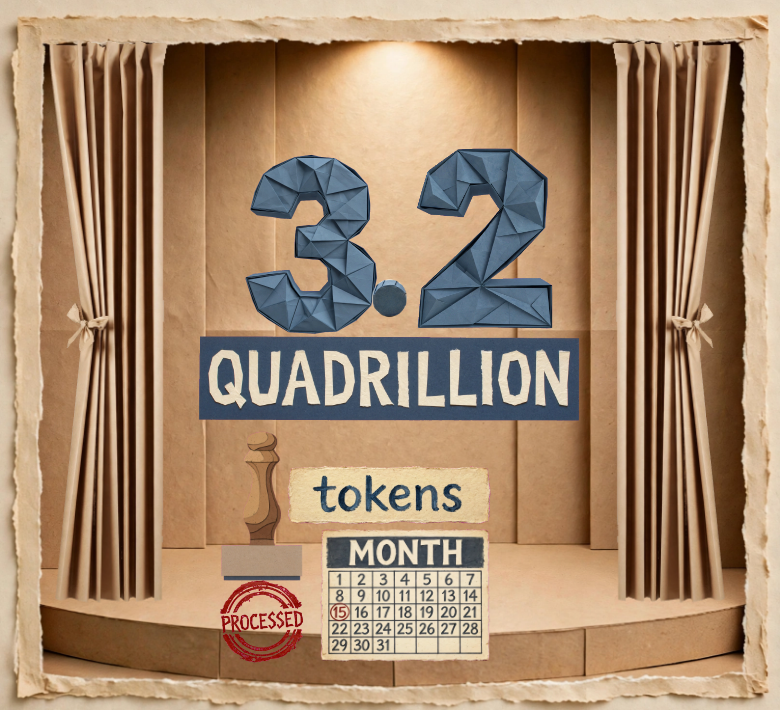

Fourteen frames, one at a time, in time order. Five are NEW (marked ★) — the frames between the frames, added tonight for your check. Tap NEXT › to walk the opening second by second.

0.00 s ★ FRAME 0 — THE STAGE BEFORE EVERYTHING. Curtains fully inside the frame, boxes dressed at the sides, the black ball Ø 24 px at the platform's centre. Nothing has happened yet — the opening state, certified.
0.30 s · FRAME 1 — THE STILL STAGE. One cardboard stage, lit warm. Two boxes flank the platform; the black ball (Ø 24 px, a 100 mm glass sphere) rests grounded on the platform line. The claim has not been born.
0.45 s ★ MID-FRAME A — THE HELD BREATH. Set, and nothing has moved: static equilibrium, v = 0, a = 0. The burst is 0.15 s away; even the contact shadow may not change until it comes.

1.45 s ★ MID-FRAME B — THE EMPTY INSTANT. Smoke α = 0.006 — present on paper, invisible to the eye; true zero at 1.473 s. Shards all resolved by 1.286 s, boxes thrown clear, ball gone. The digits are not born until 1.50 s. The stage is truly empty.

1.76 s · FRAME 2 — THE CLAIM ARRIVES ON SPOKEN TIME. “3.2” mid-growth (71 px of its 95), spring ζ = 0.55, ω = 9.6 rad/s — underdamped, zero overshoot: it grows like a struck spring and settles, never pops.
2.02 s · FRAME 3 — THE WORD LANDS. “3.2” settled at 95 px as its word ends; the QUADRILLION band grown to 92%. Under it, a fresh TOKENS card, and the stamp that will fall at 3.44 s.
2.24 s · FRAME 4 — ONE STAGE, EVERY PART ON THE LINE. Digits settled, band complete, tokens card fresh — the whole claim standing together, every element grounded on the one platform line.
2.76 s · FRAME 5 — THE SETTLED CLAIM. The complete claim at rest: “3.2 QUADRILLION tokens”, nothing cropped, nothing drifting. From here the proof machinery begins — the stamp falls next.

3.70 s ★ MID-FRAME C — THE STAMP IN FLIGHT. Free fall from rest through 136 px: it has fallen 79.6 px (½·g·τ²), is moving at 612 px/s, impact at 3.780 s. The red seal is NOT in this frame — it does not exist yet; the impact creates it.
3.96 s · FRAME 6 — THE STAMP AT ITS CALCULATED REST. Fall 136 px at g = 2,352 px/s², landing 3.78 s, damped to rest at 3.934 s — 0.026 s before the word “month” completes. “PROCESSED” is being born in red beside it.
4.15 s ★ MID-FRAME D — THE PAGE AT 61°. The calendar page caught mid-flip at its calculated angle (projected height 0.479 of flat), beside the undisturbed seal — touching nothing, covering nothing. Edge-on at 4.190 s, flat at 4.379 s.
4.46 s · FRAME 7 — THE PROOF COMPLETE. The calendar lands flat, showing MONTH and its grid. The claim above, the red PROCESSED seal below — every proof on the stage at once.

4.76 s · FRAME 8 — EVERY WORD AT HOME. Every spoken word of the opening is now visible as an object on the stage. Nothing enters after this but the light.

5.20 s · FRAME 9 — THE HOLD. The completed opening tableau, holding under a brightening light while the speaker moves on to the mountain of all human writing.
WHAT IS BEING DECIDED
The opening's plan: padding to ~1.2 s, narration shifts to ~1.76 s (Option B — already approved).
These 14 frames are the contract: in Cycle 2 the stage gets built to move exactly like this.
The 5 ★ frames are new tonight — they fill the gaps the first strip jumped over (the stage before everything, the held breath, the empty instant, the stamp's fall, the page mid-flip).
Physics throughout: springs, gravity, drag — every number calculated, none picked by eye.
What these are: plan frames — stills composed from the stage's own asset family, re-seated and re-scaled to the approved plan and the calculated physics. Not frames of the film, not a render. The stage itself moves in Cycle 2, against this strip.